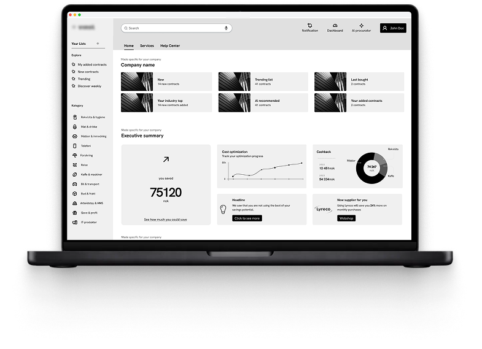

From user pain
to product clarity
A few months ago, after long negotiations with the leadership group, we made a decision: build a new face and a new experience for the main product — from scratch, with almost no constraints. No compromises for legacy code. No shortcuts because of infrastructure debt. Me and the development team knew the product well — its friction points, its red flags — but we wanted something fresh. While Christian, the lead developer, analysed what the platform could technically support, I had one job: start from the user and work forward.
I started with structured user interviews and feedback sessions. What came back was rich and messy — overlapping needs, contradicting mental models, and a long list of frustrations buried in workarounds.
That's where AI entered the process — not as a shortcut, but as a thinking partner. I used it to translate and group feedback across formats and languages, audit my UX pillars against the real data, and co-build personas grounded in behaviour patterns rather than assumption.
When it came to wireframes, everything was kept deliberately grey. Stakeholder reviews need to stay focused on flows, content, and journeys — not colour. It's the fastest way to get the right feedback at the right time, and avoid the "I don't like this blue" conversation.
Good design
starts with
better questions
